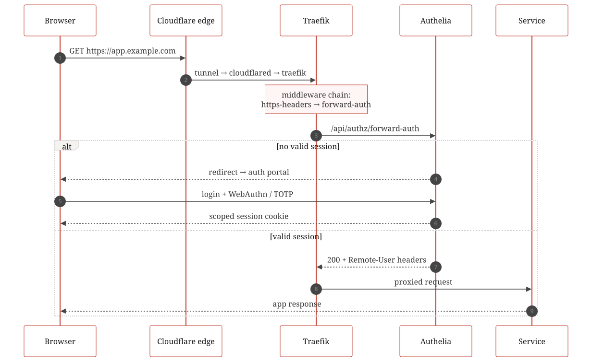
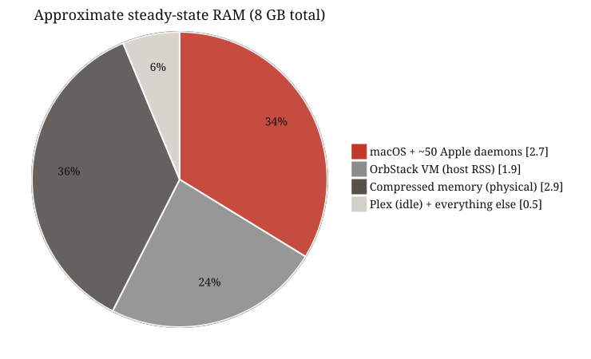

Anatomy of an 8 GB Media Server
A full-stack review of a Mac Mini running nineteen containers and a native Plex install — and what a memory-starved box teaches about virtualisation, least privilege, and bugs that never log an error.
The constraint
The machine is a Mac Mini with 8 GB of soldered, non-upgradable RAM. It runs a complete media-automation stack — reverse proxy, single sign-on, five *arr apps, two download clients, monitoring, dashboards, and a handful of operational sidecars — inside an OrbStack Linux VM capped at 3 GiB, alongside a natively-installed Plex Media Server. Every design decision below is downstream of that 8 GB figure.
The most consequential decision is the split-brain host. Docker on macOS means a Linux VM, and a Linux VM means no GPU passthrough: a containerised Plex would software-transcode and promptly exhaust the machine. Run natively, Plex gets VideoToolbox hardware transcoding — decode and encode — at near-zero RAM cost. Everything that doesn’t need the GPU lives in the VM; the one thing that does, doesn’t.

Ingress without open ports
Nothing listens on the WAN. A Cloudflare Tunnel makes an outbound-only connection from a cloudflared container to Cloudflare’s edge, which terminates TLS; inside the Docker network, plain HTTP flows to Traefik, and every application route passes through an Authelia forward-auth middleware enforcing two-factor authentication (WebAuthn or TOTP) by default, with argon2id password hashing and aggressive brute-force lockouts behind it. Services with strong native authentication bypass the SSO layer deliberately — a standard pattern, applied sparingly.

The bug that never logged an error
The acquisition pipeline is conventional: a request portal feeds the *arr apps, an indexer hub feeds them releases, downloads land in a staging directory, and imports move files into the library, where Plex picks them up via filesystem events. The import step is supposed to use hardlinks — same physical file, two directory entries, zero copy cost — and the apps were correctly configured to do so. The downloads and the library even share one physical filesystem.
And yet an audit found zero hardlinked files in the entire library. The proof took one command inside a container:
ln /downloads/file /data/file → Cross-device link
The staging directory and the library were mounted as two separate bind mounts — and the virtualisation layer surfaces each bind mount as a distinct device. Linux refuses link() across devices, the apps silently fall back to copying, and nothing anywhere reports a problem.
Every import had been a full copy across a USB drive: double the write I/O, double the disk space while torrents seed. The fix is the layout the TRaSH guides have always recommended — a single parent mount shared by download clients and library apps, so staging and library are one device again. The lesson generalises: a correct setting is not a working feature. Hardlink support survives every config review and dies quietly at the mount table; the only way to know is to test the actual operation.

Living inside 8 GB
At steady state the box is fully committed: macOS and its ~50 ambient daemons hold roughly 2.7 GB, the VM’s host-side footprint runs about 1.9 GB, and the memory compressor squeezes over 6 GB of logical pages into under 3 GB of physical RAM. It works — but there is no slack, so the engineering is about preventing spikes, not finding savings.

Three findings from this corner of the review were the least intuitive:
- VirtualisationTightening the VM’s memory cap made things worse. Apple’s hypervisor reclaims guest memory by ballooning, and ballooning needs headroom: with a generous cap the VM’s host footprint floated well under it, while an experiment with a tighter cap pinned the process near cap-plus-overhead and host usage went up. The cap governs guest-visible memory, not host cost. The real lever is what runs inside the VM.
- LimitsAn application cache larger than its container’s memory limit is a scheduled OOM-kill. One download client’s article cache was configured ~25% above the container’s
mem_limit— invisible at idle, fatal mid-download. Per-container limits only protect you if every knob inside the container respects them. - SchedulingEvery nightly job had independently chosen midnight. Image updates, profile syncs, a maintenance restart — all at 00:00, with the media server’s own nightly tasks starting shortly after. On a box with no memory slack, the cron pile-up was the spike risk. Staggering them costs nothing.
Least privilege for the Docker socket
Five containers needed the Docker API: the proxy reads routing labels, a dashboard reads container status, an auto-updater pulls and recreates, a healer and a scheduled restarter bounce containers. The naive pattern — mount /var/run/docker.sock everywhere, add :ro, move on — is a trap: read-only protects the socket file, while the API behind it remains root-equivalent for the whole VM.
The reviewed design landed on a tiered model: a read-only socket proxy with a GET-only allowlist for anything that merely observes, a second proxy instance that permits restarts and nothing else for the remediation sidecars, and a raw mount only for the one component whose job genuinely is creating and destroying containers.

Field notes
- BackupsApplication self-backups that live on the application’s own disk are not backups. Every service in the stack dutifully snapshotted its database — into the same directory tree, on the same SSD, as the live data. They protect against app corruption and nothing else. State you can’t rebuild (auth databases, library metadata, years of history) needs to leave the machine.
- UpdatesAuto-updating from
:latestis a posture, not a default. Daily unattended pulls of unpinned images kept the fleet impressively fresh — and meant any upstream breakage ships straight to production at midnight. The popular updater container is itself unmaintained: nobody updates the updater. Pinned major versions plus notify-only tooling is the boring, correct answer for a reference build. - LaunchA login item is not a service manager. The native server app launched at login with no crash restart and no headless start after reboot — and because the platform’s updater only applies updates on relaunch, an always-up server quietly never updated.
launchdwithKeepAlivesolves all three. - DocsDocumentation rots fastest right after a change. A service removed from the stack lived on in the README, the agent instructions, an entire setup guide, and the environment template — four documents, one ghost. Doc updates belong in the same commit as the removal.
- WorkaroundsRecord why a workaround exists, or someone will delete it. A weekly scheduled restart of one container looks like cargo cult until you know it papers over a connection-state leak. The setup’s habit of writing down the reason next to the hack is what kept the review from “fixing” it backwards.
A point-in-time review (June 2026) of a personal setup, lightly genericised. Diagrams are pre-rendered Mermaid; no scripts were harmed in the serving of this page.